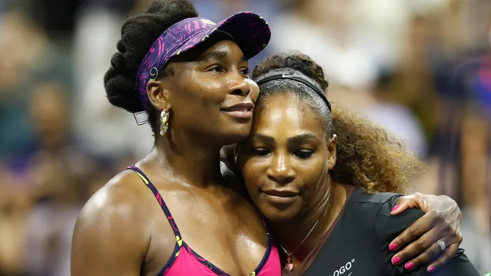

Biography
Venus Ebony Star Williams learned to play tennis with her sister Serena Williams on the public courts of her hometown, Los Angeles, California. She was taught by her father, Richard Williams, who learned about tennis from reading books and watching videos. By the age of ten she was able to serve at 100 miles per hour and at the age of 14 she turned pro. In October of 1994 she beat the number 50 seed in her very first match as a pro. Since the sisters began to get a lot of recognition for their great tennis playing the family moved to Florida so Serena and Venus could attend the Rick Macci Tennis Academy. After a while the girls stopped going to tournaments so they could take it slow and focus on schoolwork. Before the break Venus Williams had an amazing record of 63-0 on the United States Tennis Association Junior Tour. After Venus had been pro for four years she decided to go to The Art Institute of Fortlauderdale to study fashion. When she finished school she dreamed of having her own line of clothing. Since she was an athlete she decided to go the route of making athletic wear. She now has a brand of clothing called Eleven which allows you to be athletic and look cute while doing it. As Venus continued to improve her clothing line, win many awards, earn many titles, and set new records she became diagnosed with an auto-immune disease called Sjogren's Syndrome in 2011. This disease reduced her ability to play tennis for long periods of time. After many treatments, diets, and cancelled tournaments/matches she was getting back to her old self, which included playing tennis ALL the time. She still plays professional tennis even at the age of 40 and continues to speak out about racism and sexism, not just in the sports industry but all over. Venus has set some pretty high standards for tennis players and is a very succesful not only in her sports but also in her buisnesses. She continues to be an amazing tennis player and is a great role model for all people.